同一個任務，三個時間點
客服每天在這頁花約四小時，做的是同一件事：把待出貨清到零。切換看看出貨這個動作在三個版本裡長什麼樣子。
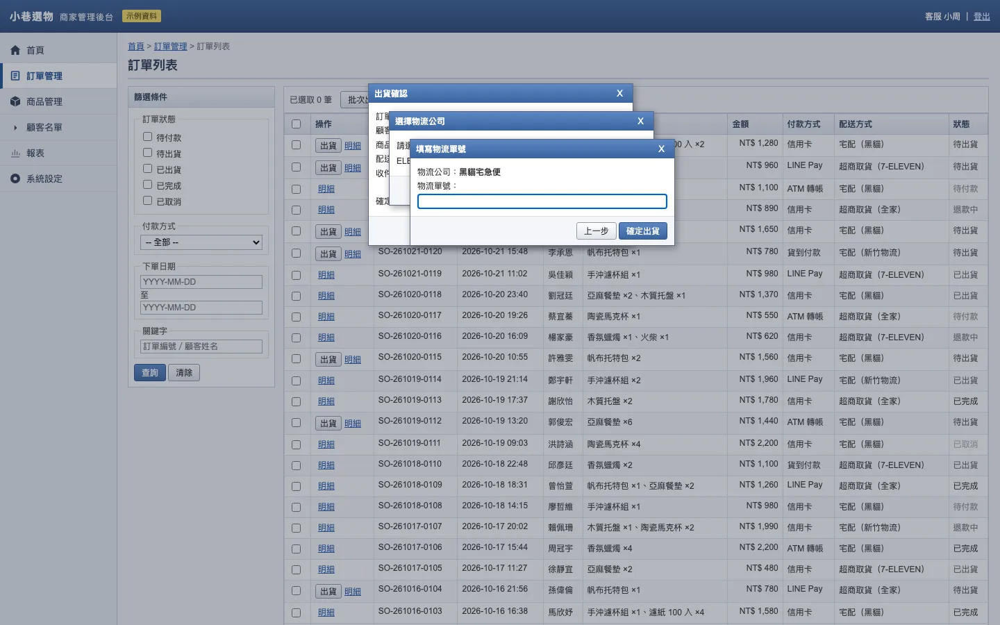
5出貨一筆要點 5 次，再輸入單號。三層對話框疊在一起，填單號時看不到收件資訊；物流商每次都要手選。
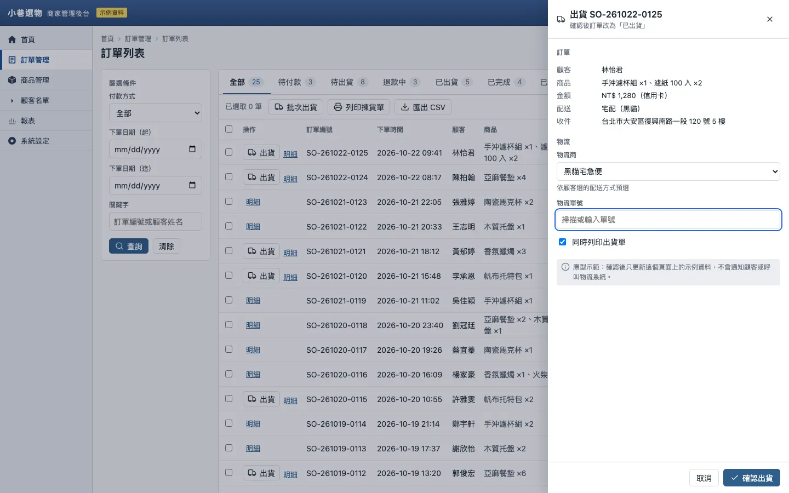
2出貨一筆降到 2 次點擊加輸入單號，物流商依配送方式預選。清空 8 筆仍要逐筆打開、關上面板，表格本身和現況幾乎一樣。

2清空 8 筆待出貨，全程共 2 次點擊（其中一次是「稍後處理」），加 8 次 Enter。出貨後自動換下一筆，焦點回到單號欄。
次數來自兩輪 SESSION 的腳本化互動斷言。第二輪的最小修補方向 A 清空同樣 8 筆要 8 次點擊加 8 次 Enter。
先問哪裡不好
我對目前訂單頁的 UI／UX 不滿意，請先問我哪裡不好，再提出改善方案與原型。
有既有介面、請求是讓它變好，所以判定為改善模式。技能先把現在的畫面截下來叫做「現況」，再用一輪編號題問：在哪個任務覺得不對、不滿的類型、依據是誰、什麼必須保留、範圍多大。
使用者說「整體看起來很舊」。這句太含糊，技能從現況截圖提出三種解讀讓使用者選：灰階過多、字級太平、圖示混雜。使用者選了第一種。
技能也自己在 1440 與 390 寬走了一次出貨，找到兩個客服沒說的問題，標成「專家檢視，待確認」。

| ID | 問題 | 層級 | 來源 | 嚴重度 |
|---|---|---|---|---|
| P1 | 退款中的訂單沒有篩選入口 | 結構 | 客服回報 | 高 |
| P2 | 出貨要開三層對話框，物流每次手選，上層蓋住訂單內容 | 流程 | 客服回報 | 高 |
| P3 | 狀態只靠灰階深淺區分 | 視覺 | 使用者確認的解讀 | 中 |
| P4 | 批次操作按鈕捲動後消失 | 流程 | 專家檢視，待確認 | 中（暫定） |
| P5 | 390 寬時狀態欄在最右側，要橫向捲動 | 結構 | 專家檢視，待確認 | 低（暫定） |
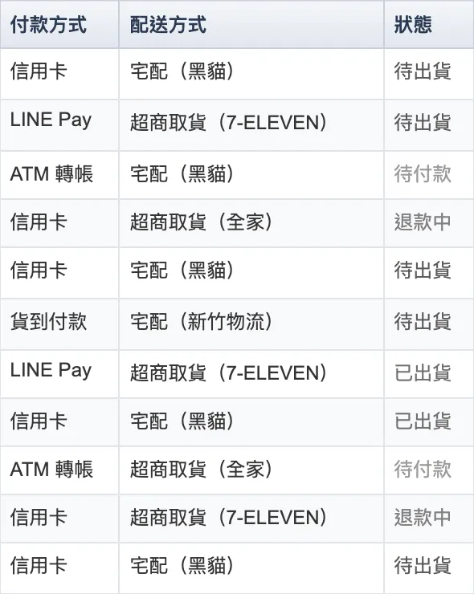
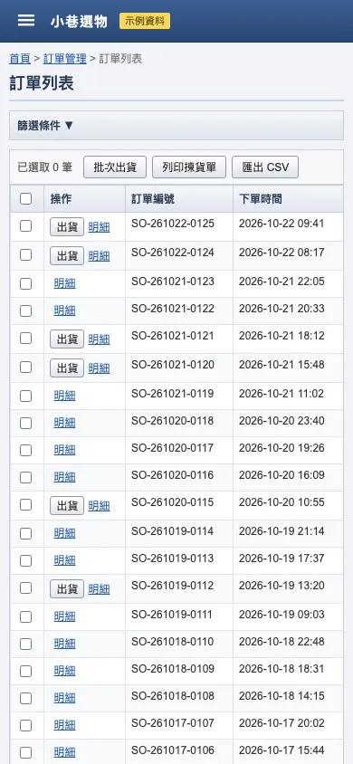
第一輪：逐題修好
兩個結構方向：A 在表格上方放狀態分頁與筆數，B 在側欄頂端放已存篩選。出貨流程兩者共用：三層對話框收成一個側邊面板。使用者選了 A。
視覺處理兩個：1 清晰帳本（密而平、色彩加形狀標狀態），2 標籤看板（寬鬆、卡片陰影、底色標籤）。使用者看過截圖後選了 1。
還是不好用。
技能把 v1 拿回去對照問題清單，發現手機版退步了：分頁直列成 7 列，第一顆出貨鈕被推到首屏外。v2 只改這一處，分頁收成單列橫向捲動。

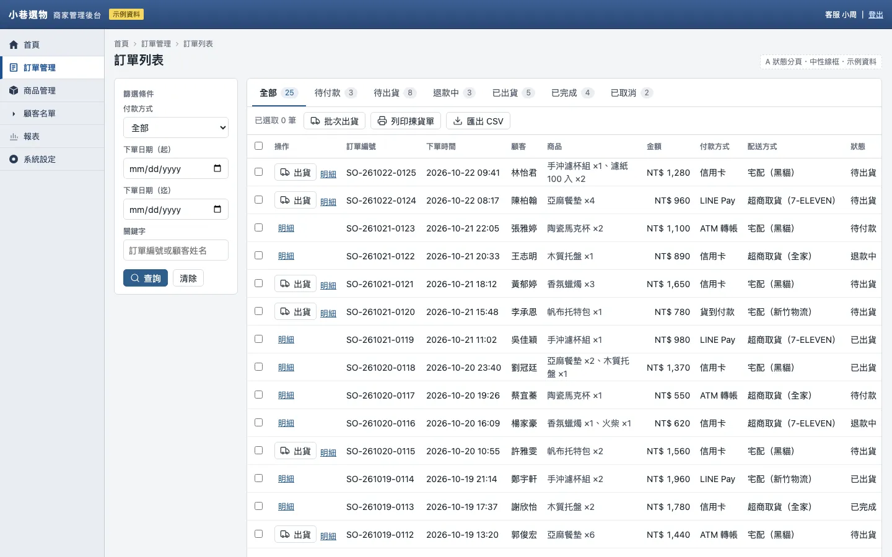

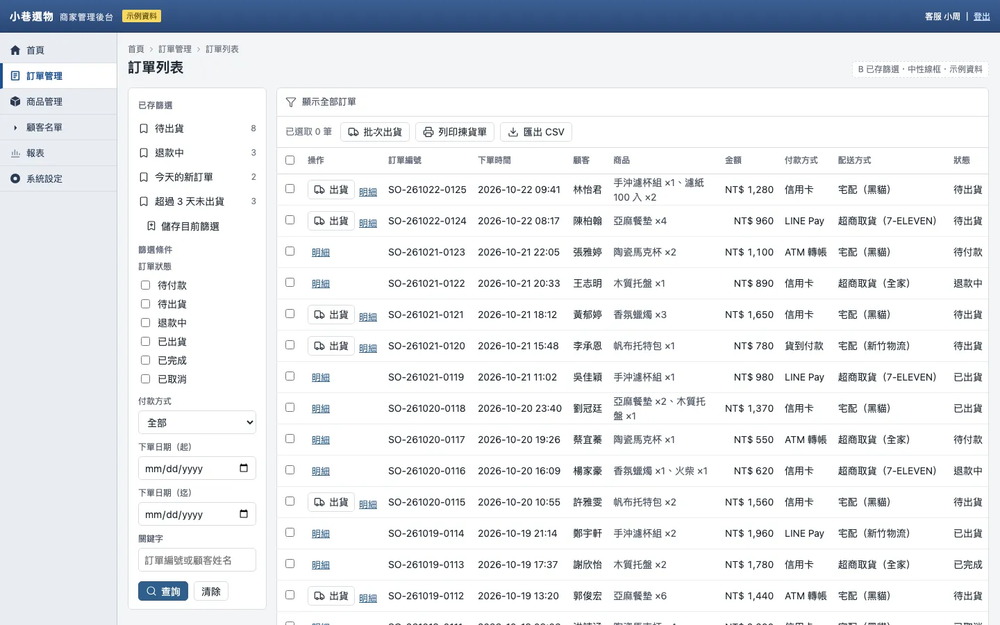

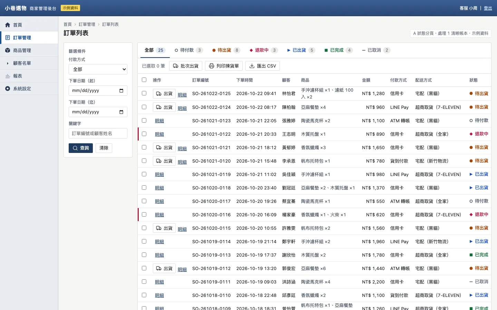

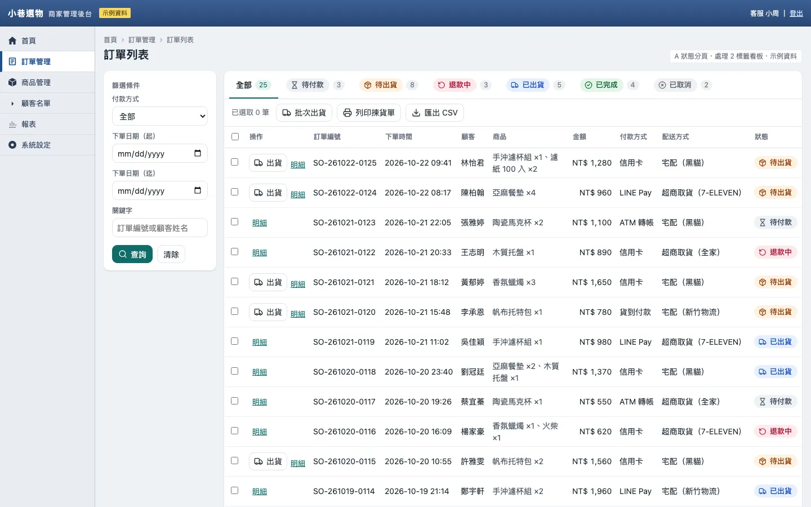
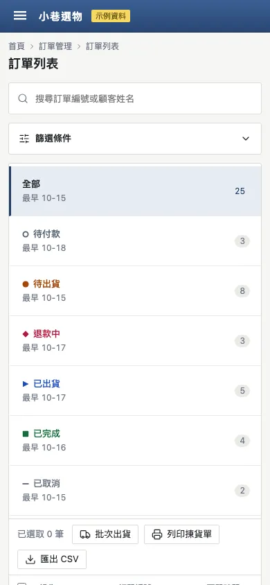
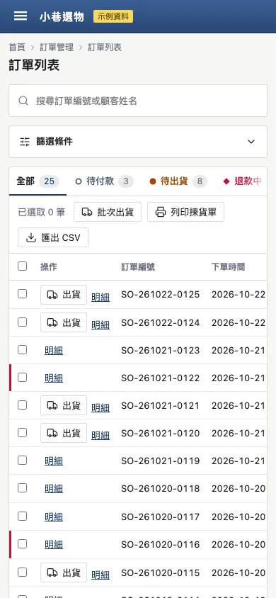
為什麼是平庸
每個問題都有解法，驗收情境也都通過，但把第一輪定稿放在現況旁邊，看起來幾乎一樣：還是那張表，加了分頁和彩色圓點。維護者判定它平庸，並把原因追到技能的三條規則上，而不是怪這一次的執行。

改了哪些規則
修改落在技能本文與改善模式的參考檔。原文是英文，下面是摘要；連結指向 GitHub 上的檔案。
提方案前先重新框定
問題是症狀。提結構或流程方向之前，先把主要任務寫成一份工作：誰做、多常做、做完是什麼樣子，再問如果今天為這份工作設計，這頁會是什麼。方向要橫跨一段野心：一個是高嚴重度問題的最小修補，至少一個照工作重排流程，各自寫出重新學習的代價。
improvement.md「Reframe before proposing」
方向要在骨架上不同
換色不算不同方向；共用代表畫面的骨架、只差一個控制項的方向也不算。每個方向要用自己的方式回答主要任務。
SKILL.md「Propose comparable directions」
處理要和現況分得出來
改善模式裡，視覺處理在範圍內的區域截圖要讀得出和現況不同，否則只算細節調整。
SKILL.md 視覺處理段落
安靜是氣氛，不是沒設計
後台或資料密集的畫面一樣要有明確的概念、刻意的字級與密度，每一列或每張卡片要有一個帶頭的主要動作。
SKILL.md「Calm is a mood」
第二輪：先說這是什麼工作
沿用第一輪的現況、訪談答案與 P1–P5，不參考第一輪的方向。這次技能在提方案前先寫下：
客服做的是把待出貨清到零，並讓每筆退款中的申請都有結論。完成的樣子是兩個數字歸零，而不是「找到某一筆訂單」。P1 和 P2 是同一個錯位的兩個症狀。
三個方向因此橫跨三種野心：A 只修 P1、P2；B 留住表格，讓處理在表格裡完成；C 照著這份工作重排整頁。技能建議 C，使用者選了 C。

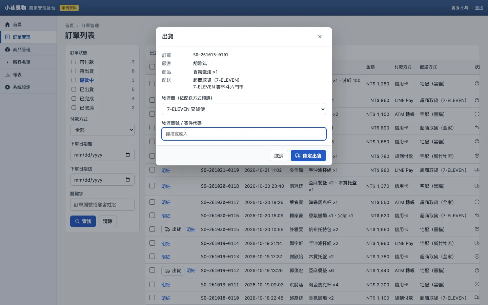

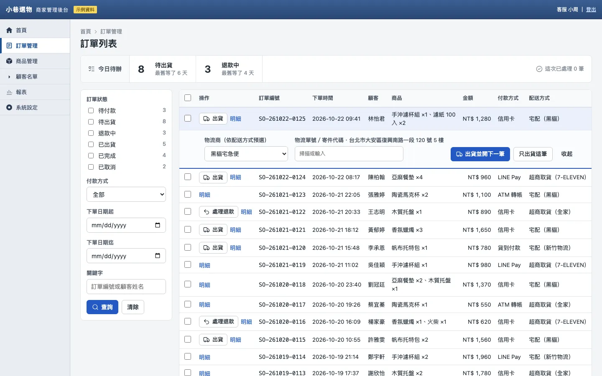

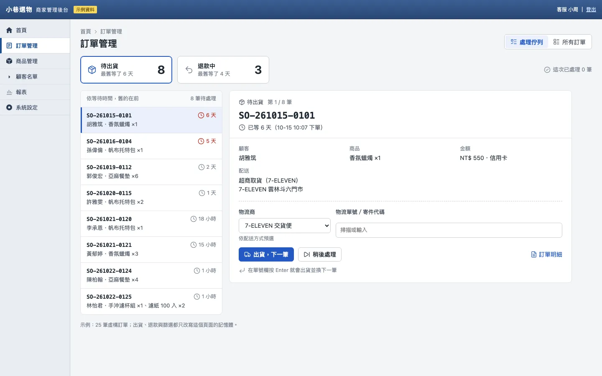

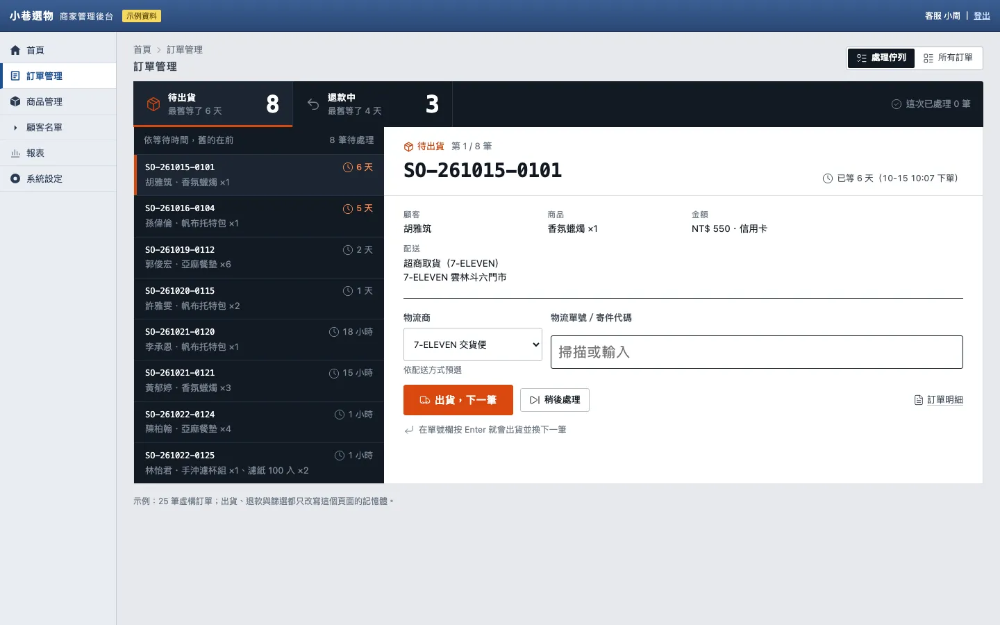

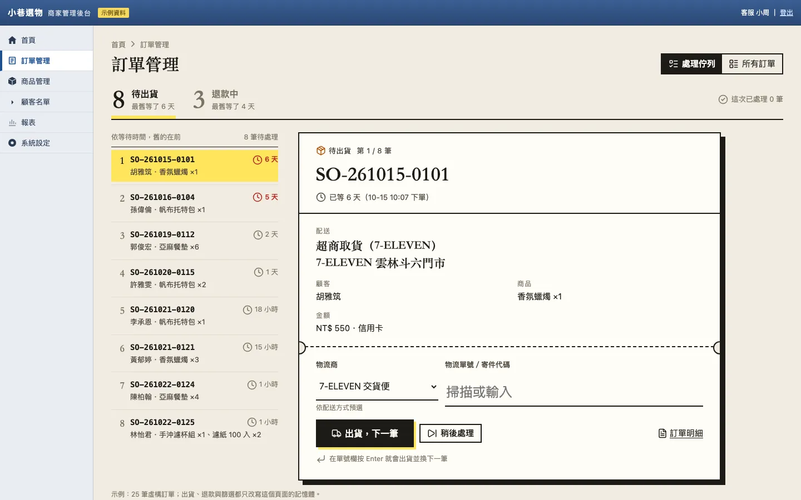


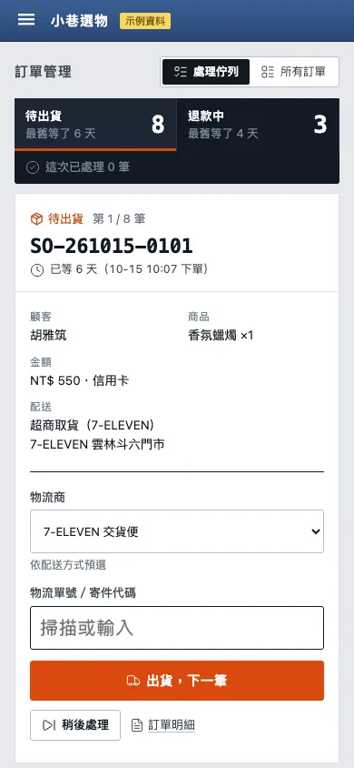
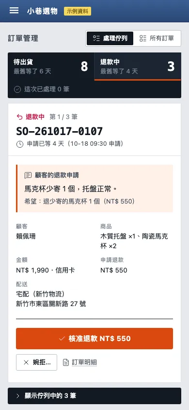
驗證到哪裡
兩輪都在 2026-10-22 用 Playwright 1.64.1 與 Chromium（headless）完成，下面摘自兩份 SESSION 的驗證段落。
做過的檢查
- 第一輪：每頁在 1440×900 與 390×844 截圖，另加出貨流程與狀態欄特寫共 28 張，逐張看過後修了三處。
- 第一輪：現況出貨 5 次點擊；a-v2 的退款中分頁剛好 3 筆、面板焦點在單號欄、出貨與復原改變筆數；9 個頁面或狀態在 390 寬沒有橫向溢出。
- 第二輪：35 張截圖，看過後修了六處，包括處理 2 的出貨鈕落在首屏外、「明細」連結和主要動作搶眼。
- 第二輪腳本化斷言：現況 2／2、A 7／7、B 11／11、C 22／22、定稿 22／22；所有頁面在兩種寬度都沒有 JavaScript 錯誤。
沒有做的檢查
- 真實客服試用。使用者在每個選擇點都接受了建議，這不是可用性證據。
- 讀屏器、Safari 與 Firefox、實機手機、200% 縮放、色覺差異模擬。
- 第二輪的「所有訂單」在 390 寬仍是表格橫捲，P5 只在佇列檢視解決。
- 掃描槍輸入。單號欄假設掃描槍會送出 Enter，沒有實測。
打開原型
單檔離線 HTML，原樣複製自試跑產物。出貨、退款只改寫頁面記憶體，不會寫入任何系統。